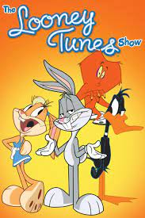
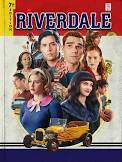
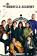

A little girl with supernatural imagination powers brings to life a monster named Sandman, who protects her in times of distress.
Drama

Smith's family consists of four members which include an unusual goldfish that has the mind of a German football player and an alien. Smith, along with the CIA, tries to save America from threats.
Sitcom
Features a satirical portrayal of middle-class American lifestyle. Caricatures certain facets of the American society, culture, television and many features of the human condition.
Sitcom

Bugs Bunny, Daffy Duck and the rest of the `Looney Tunes' characters are back with more adventures for a new generation of viewers. The animated series features roommates Bugs and Daffy moving out of the woods and into the suburbs, interacting with their neighbours, who happen to be other `Looney Tunes' favourites - including Sylvester, Tweety, Porky Pig and Foghorn Leghorn. Also featured in the series are CGI Wile E. Coyote-Road Runner shorts and `Merrie Melodies' music videos.
Sitcom, Kids

Spencer James is a rising football player who makes the shift to an affluent Beverly Hills school on his coach's advice. He struggles to find his footing as the new team is threatened by his arrival.
Drama
Teenage Ginny and her family yearn to put down roots in a picturesque New England town after years on the run.
Drama

Archie, Betty, Jughead and Veronica tackle being teenagers in a town that is rife with sinister happenings and blood-thirsty criminals.
Drama

On one day in 1989, 43 infants are inexplicably born to random, unconnected women who showed no signs of pregnancy the day before. Seven are adopted by billionaire industrialist Sir Reginald Hargreeves, who creates the Umbrella Academy and prepares his "children" to save the world
Drama